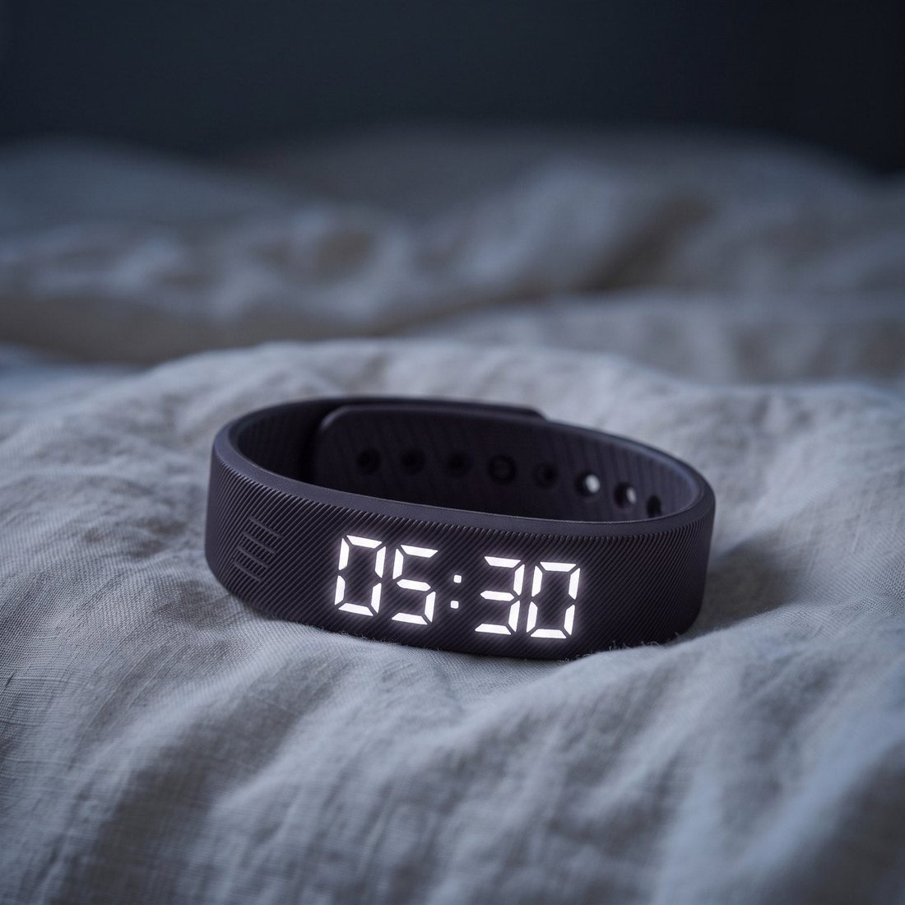
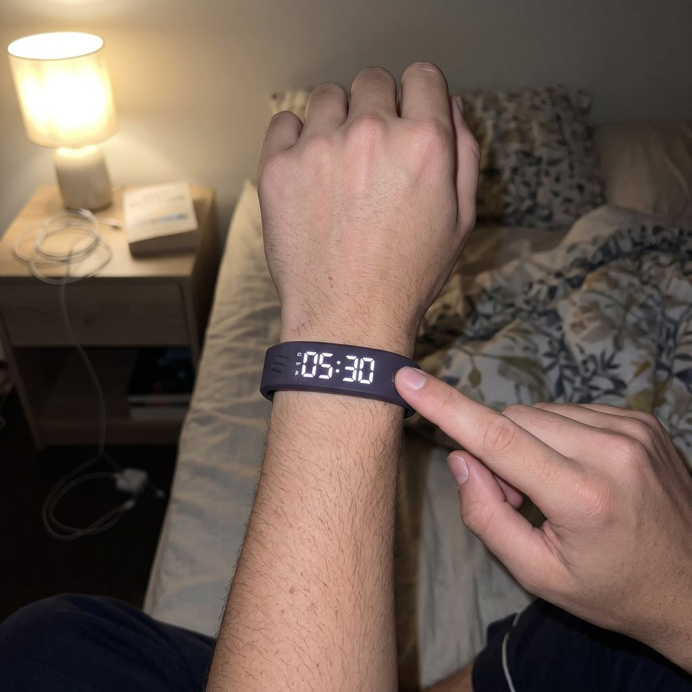
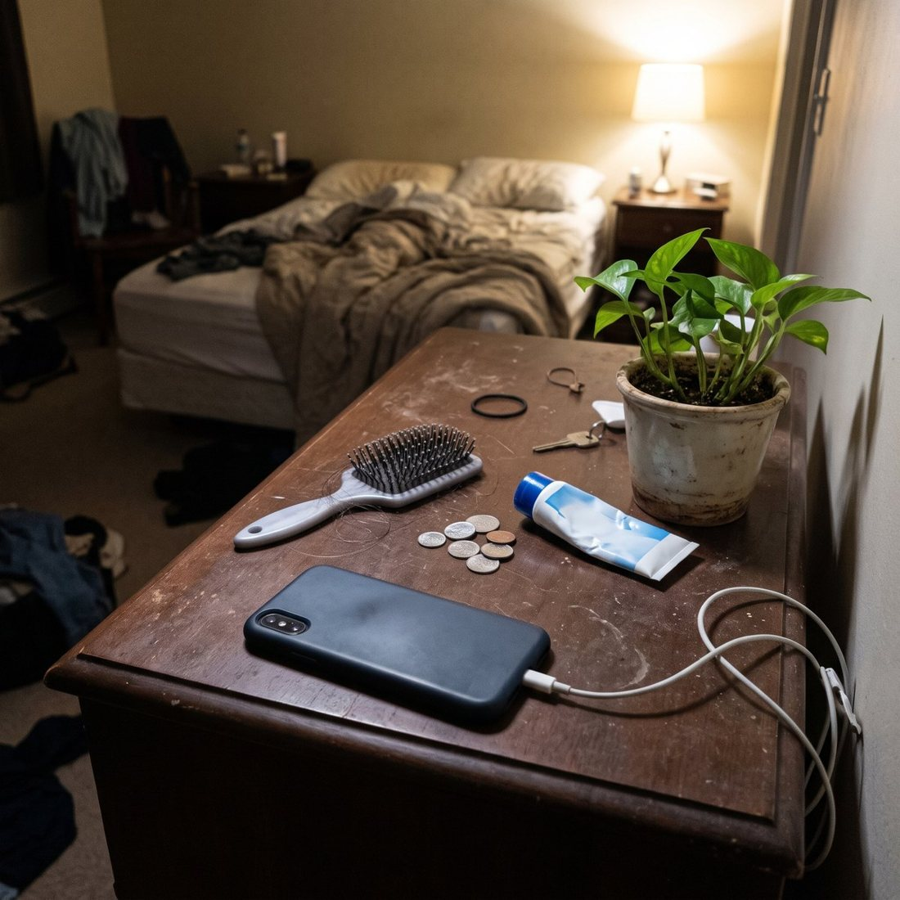
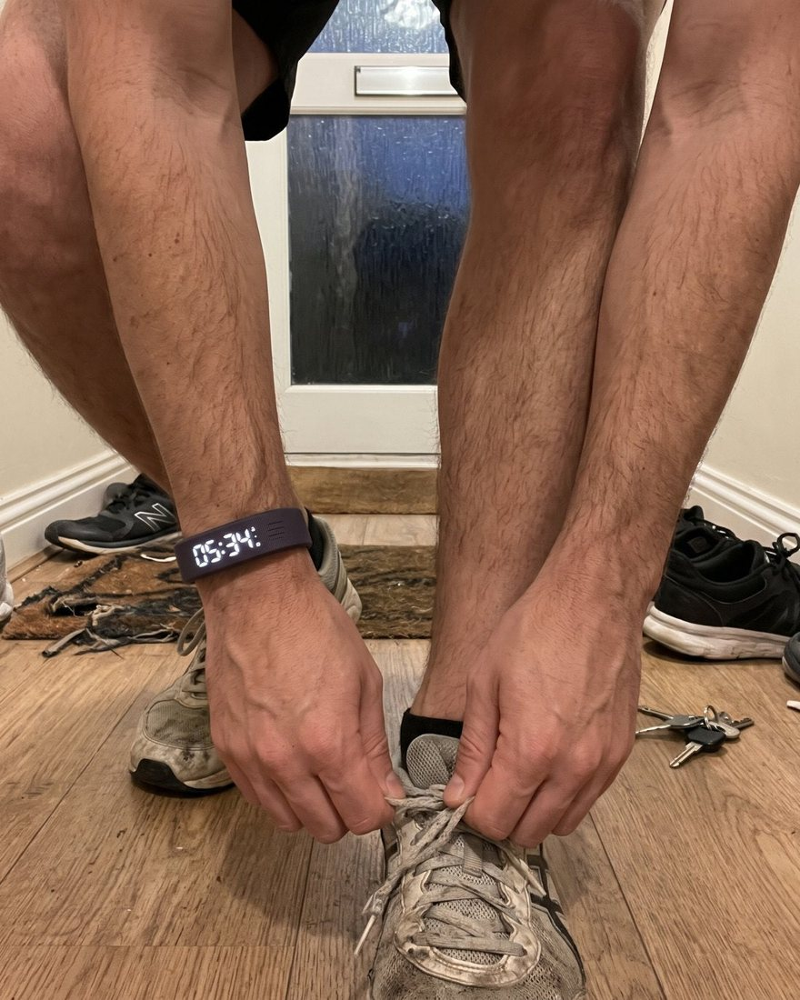
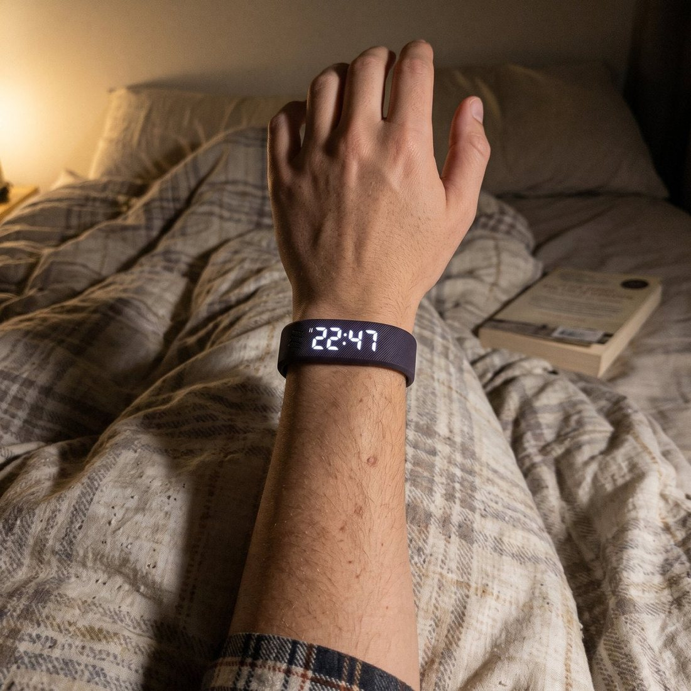
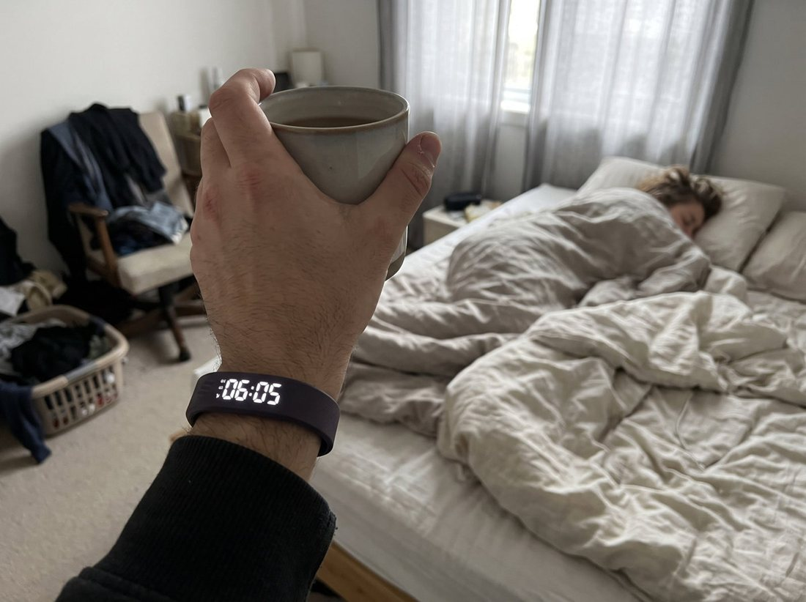
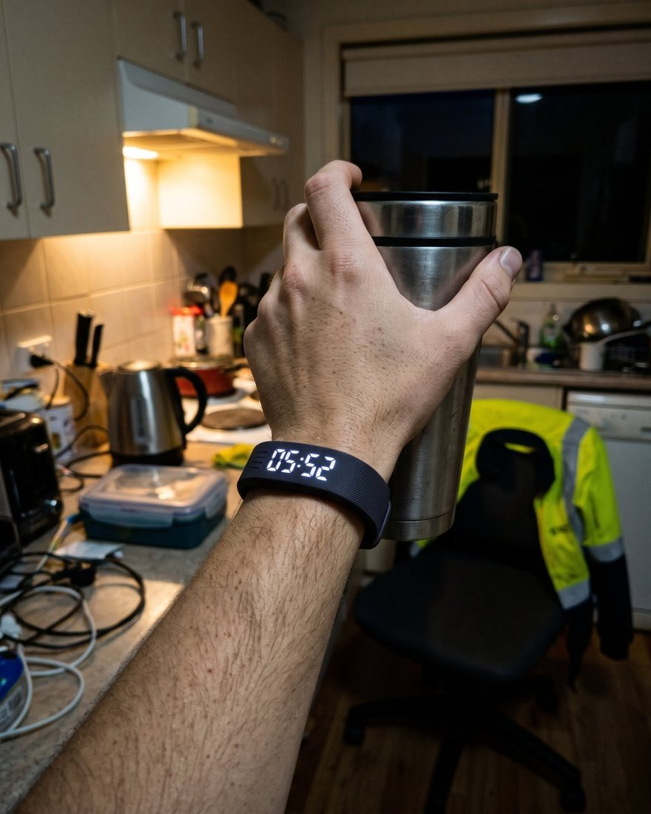
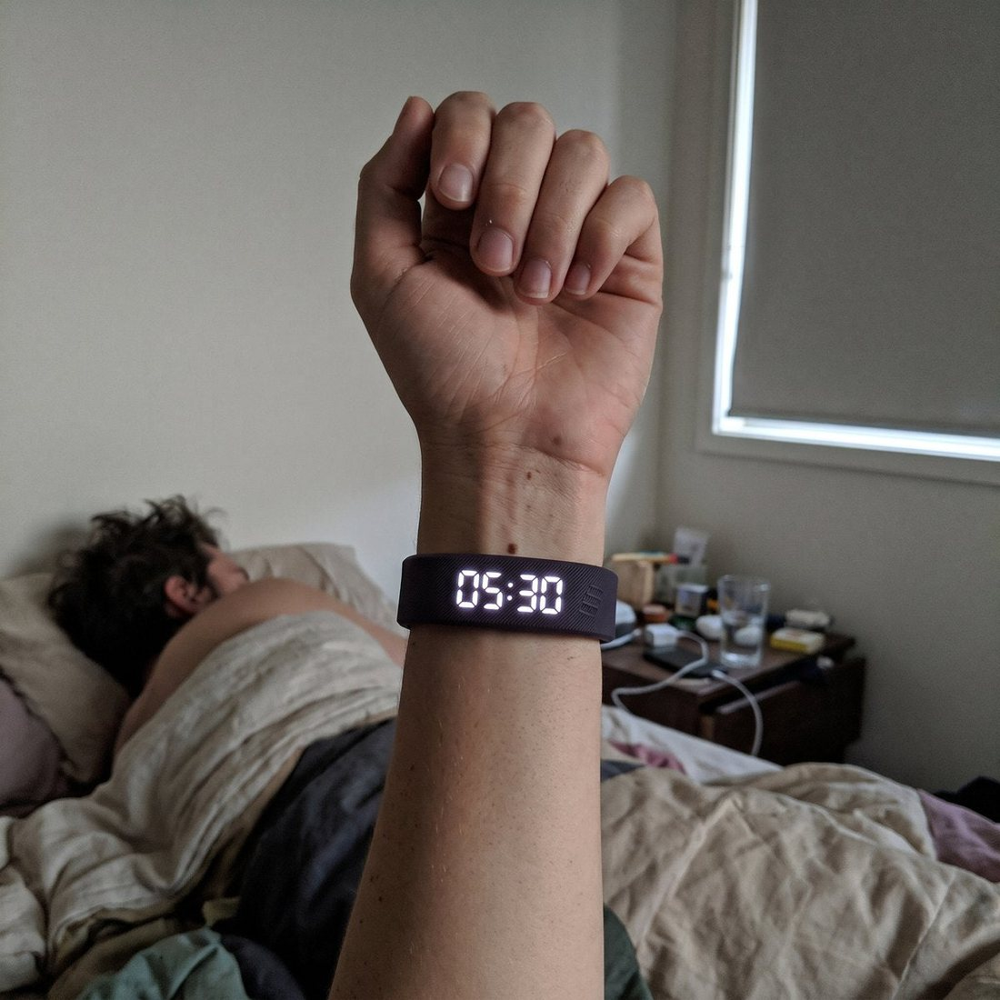

Sleep Labs
Your first 7 days with the Silent Wake Band, and the small habits that make getting up easier.
Start here
Your band has one job: wake you with a pulse on your wrist, and leave everyone else asleep. This guide helps you get that working in a week.
It is short on purpose. Read pages 3 to 6 before your first night. Pick up the rest when you need it.
This guide shares general information about sleep habits. It is not medical advice and does not diagnose or treat any condition. If you often struggle to sleep or to wake, talk with a health care provider.
Before night one

Which wrist? Start with the one you don't sleep on. If the pulse feels faint, try the other wrist or move the strap one notch tighter.
Nights one to three

Everyone sleeps differently. Give yourself a few mornings to learn how the pulse wakes you before you rely on it alone.
When to drop it. If the band has woken you three mornings in a row before the phone went off, you can stop setting the backup. On days you can't afford to be late, such as a flight or an exam, keep one anyway.
The one habit that matters most
The American Academy of Sleep Medicine (AASM) advises getting up at the same time every day, weekends and holidays included.
A steady wake-up time gives your body a rhythm to work with. Choose a time you can keep seven days a week, then work backwards to a bedtime.
The AASM also advises choosing a bedtime that allows at least 7 to 8 hours of sleep. Use this table to find yours.
| If you wake at | Lights out for 8 hours | Latest, for 7 hours |
|---|---|---|
| 5:00 am | 9:00 pm | 10:00 pm |
| 5:30 am | 9:30 pm | 10:30 pm |
| 6:00 am | 10:00 pm | 11:00 pm |
| 6:30 am | 10:30 pm | 11:30 pm |
| 7:00 am | 11:00 pm | 12:00 am |
Not sleepy at lights-out? The AASM suggests not going to bed before you feel sleepy. Keep the wake-up time fixed and let the bedtime settle over a week or two.
The plan
One small thing each day. Don't try to change your whole routine at once.
| Morning | What to do |
|---|---|
| 1 | Band on, backup phone alarm 5 minutes later, across the room. Notice what the pulse feels like when it wakes you. |
| 2 | Same set-up. When the band pulses, sit up straight away, before you decide anything. |
| 3 | Feet on the floor within a minute of the pulse. Switch the backup off on your way out of the room. |
| 4 | If the band woke you on mornings 1 to 3, skip the backup. Get some light as soon as you're up. |
| 5 | Keep the same wake-up time, even if it's the weekend. |
| 6 | Plan the first ten minutes the night before: clothes out, water by the kettle, shoes by the door. |
| 7 | Look back. Did the band wake you every day? Was the time right? Adjust one thing for next week. |
If the band didn't wake you on a morning, don't push on without a backup. Go to page 11.
When the pulse comes

Groggy at first? It's common to feel foggy for a while after waking, and it passes. Judge the morning by how you feel after you've been up and moving, not in the first minute.
A word on snoozing: studies disagree on whether it does any harm. The simple approach is to set the alarm for the time you need to get up, and get up then.
The night before

These come from the AASM's healthy sleep habits. Pick one or two; you don't need them all.
Your band helps here too. With the alarm on your wrist, your phone can charge in another room.
If you share a bed

You're not unusual. In a 2025 AASM survey of 2,007 US adults, 37% said they go to sleep at a different time than they'd like to fit around a bed partner, and 31% sleep in another bed or space.
Both wearing one? Each of you sets your own time. Neither alarm is for the other person.
If you work shifts

The AASM's guidance on shift work says plainly that there is no one-size-fits-all solution. These are the parts most people can use.
If you regularly can't sleep when you need to, or can't stay awake at work, talk with a health care provider. Shift work disorder is a recognised condition, and there is clinical guidance for managing it.
If you sleep through alarms

A pulse on the wrist is felt, not heard, and many people notice that more than a sound. It still pays to stack things in your favour.
Still not waking you after a week? It may not suit the way you sleep. Send it back within 30 days of delivery; start at sleeplabs.shop/pages/contact.
Quick fixes
Check the alarm was switched on and the band was charged. Tighten the strap one notch or change wrist. Keep a backup alarm until it has woken you three mornings running.
Some people find this once their wake-up time is steady. If you feel rested, get up. If you don't, look at your bedtime first.
The band makes no ringtone, so look at what happens next: the bedside light, a drawer, a phone screen. Move those steps out of the room.
Loosen it one notch and give it three nights. Wearing it for an hour in the evening first helps you get used to it.
The steps are on the quick-start card in the box. If you've lost it, message us through sleeplabs.shop/pages/contact and we'll send them.
Need a person? Use the contact page and we'll reply by email. Include your order number.
Print this page
My wake-up time: __________
Lights out by: __________
Sources and small print
The sleep habits in this guide are taken from the American Academy of Sleep Medicine. Sleep Labs is not affiliated with the AASM, and the AASM has not reviewed or endorsed this guide or the Silent Wake Band.
When to talk to a professional. If sleep difficulties continue despite healthy habits, the AASM advises talking with your health care provider or an accredited sleep center. The same goes if you regularly cannot wake up, or feel very sleepy during the day.
This guide is general information, not medical advice. The Silent Wake Band is a consumer alarm, not a medical device, and is not intended to diagnose, treat or prevent any condition. People sleep differently, and we can't promise it will wake every person in every situation.
© 2026 Sleep Labs. For personal use. sleeplabs.shop